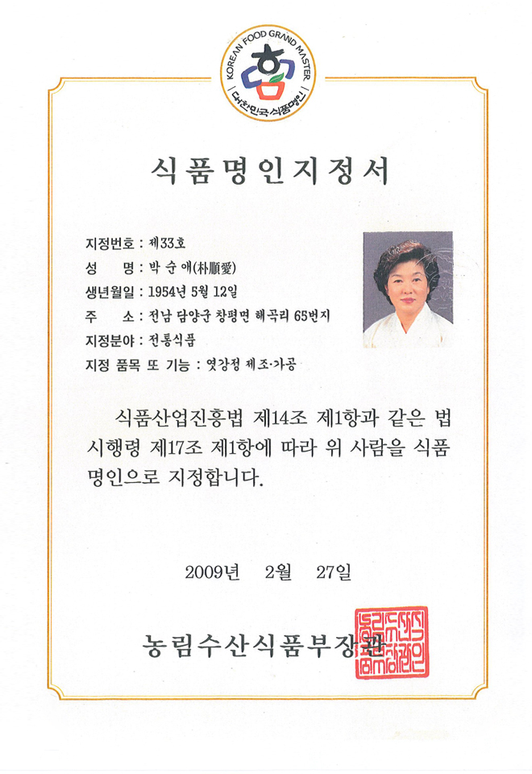
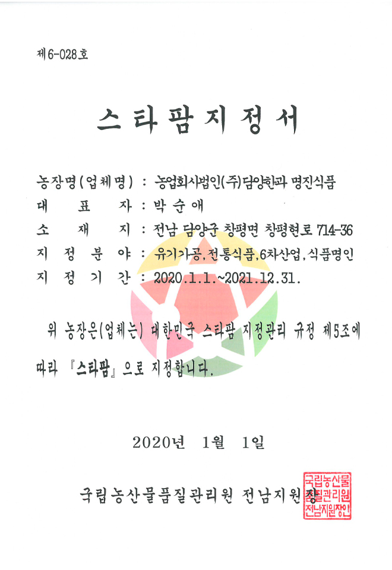

대표 인사말
인사말
'자연의 산물을 오랜 시간 숙성시켜 빚어낸
보배로운 우리 먹거리'
조선 초기 양녕대군이 담양군 창평 지역에 낙향하여 지낼 때, 동행했던 궁녀들이 전수해 주었다는 창평 쌀엿과 조청은 남도의 풍부한 곡물과 어울려 한과 생산의 기반이 되었다고 합니다.
이러한 배경을 지닌 담양한과는 위생적인 제조 시설과 식품안전을 위한 가공 환경에서 안전하고 믿을 수 있는 우리 과자를 생산하고 있습니다.
박순애 명인은 말합니다.
“전통 한과는 건강과 복을 기원하는 지혜가 담긴 음식입니다. 쌀을 비롯하여 곡식과 채소, 과일, 씨앗 등 다양한 재료를 첨가해 영양소를 고루 갖춘 건강식품이고요. 쌀을 발효해서 만드는 만큼 소화에 좋아 선조의 지혜를 엿볼 수 있지요.”
담양한과는 가족을 위한 유용한 간식거리, 한과의 주원료인 찹쌀의 발효과정을 정직하게 지켜가고 있습니다.
'외국인들에게도 사랑받는 문화대사로서의 역할을 톡톡히 하고 있는 담양한과!'
이제 한과는 우리나라에서만 볼 수 있는 식품이 아니랍니다.
아시아를 넘어 미주, 중동까지 세계 여러 곳에서 만나볼 수 있는 우리의 전통 간식입니다.
하지만 더 넓은 세상 속으로 들어가기 위해 이제는 한과의 틀을 벗어나기 위한 노력이 필요할 때입니다.
자연재료를 이용하여 만들어 건강식으로 알려져 있는 한과를 세상에서 가장 과학적인 과자로 인정받기 위해 더 많은 변화와 연구개발에 힘쓰고자 합니다.
대한민국 식품명인의 이름으로 우리 것의 소중한 가치를 널리 알리기 위해 애쓰겠습니다.
대한민국 식품명인 제33호 대표이사
연혁
2019
- 광주 상공대상 수상
- 대한민국 한류대상 대상 수상
- 쌀 가공식품 TOP10 선정 [농림축산식품부장관]
2018
- 농식품 수출 기여 수상 [농림축산식품부장관]
- 떡·한과 페스티벌 대상 [농림축산식품부장관]
2017
- 여성기업 및 지역 경제 활성화 기여 [전라남도지사]
2016
- 한과업체 최초로 식품안전관리인증기준(HACCP) 적용 업소 인증
- 박순애 (주)담양한과명진식품 대표이사, 올해 '자랑스러운 전남인'으로 선정
- 스타팜 지정
- 여성 기업 등록
- 중국 알리바바와 수출 계약 체결
2015
- 2015년 광주 하계 유니버시아드 대회 성공 개최 표창장 수여
- 모범 중소기업 표창장 수여
- 농촌 융복합산업 사업자 인증
2014
- 10월 6차 산업화 사업자 예비인증업체 선정
- 6월 30일 농산업 현장 실습교육(WPL)장 선정
- 우편사업 우수 파트너상 [우정사업부]
- 우체국 쇼핑 우수공급업체 선정 [한국우편사업진흥원]
2013
- 대한민국 농식품 파워브랜드 농림축산식품부 장관상 수상 (2년 연속)
2012
- 대한민국 스타팜(star farm) 선정
2011
- HACCP 공장 및 신사옥 준공
2010
- 농림수산식품부 '우수체험공간' 지정
- 농림수산식품부 파워브랜드 선정
- 유기가공식품 인증
- 고품질 쌀 유통 국무총리상 표창
2009
- 한국관광공사 전국 관광기념품 공모전 특선
2018
- 대한민국 식품 명인 지정(33호)
- 농림수산식품부 전통식품 품질인증
- 미국 FDA 안정성 평가 인증(유과)
- 농림수산식품부 신지식농업인 선정
- 농식품 파워브랜드대전 전통식품부분 은상
2007
- 군민의 상(본상) 수상 [담양군수]
- 2007 우수 향토음식 경연 대회 대상 수상 [농림부장관]
- 서울 세계음식박람회 금상 수상(통과의례부문)
- 5년 연속 금상 수상 [농림부장관]
- 모범소기업 소상공인상 표창 [산업자원부장관]
2006
- 이노비즈(INNO_BIZ) 기술혁신형 기업 인증
- 서울 푸드 엔 테이블 웨이 박람회 금상 수상(통과의례부문) [농림부장관]
2005
- 서울 세계음식박람회 금상 수상(통과의례부문)
- 전라남도 농식품 명품 브랜드 '남도미향' 창단회원사
2004
- 서울 세계음식박람회 금상 수상(통과의례부문)
- 담양한과 명진식품 제2공장 준공
2003
- 1월 ISO 9001인증 획득
- 수출지원화 업체 선정 및 수출유망 중소기업 지정
- 중소기업청 기술혁신과제 선정
- 서울 세계음식박람회 금상 수상(통과의례부문)
2002
- 미국 식품의약안전청 F.D.A 인증 획득
- 한국 전통식품 Best5 선발대회 동상 - 농협중앙회장상 수상
- 12월 미국 한과 약과 수출
2001
- 한국표준협회 "으뜸상품" 선정 - 한과류, 부각류, 쌀엿류
- 한국 전통식품 Best5 선발대회 동상 [농수산물 유통공사]
- 「전통음식 떡살」출간 - 한과 부분 저술
- 산업안전공단 CLEAN 사업장 지정
- 01년, 02년 전남도 유망중소기업 지정
- (주)담양한과 명진식품으로 법인 전환
2000
- 전라남도 유망중소기업으로 선정
- 11월 광주광역시 무형문화재 제7호 故이연채 음식장 음식 재현 전시회 주최
- 「남도 전통음식」출간
- 수출 지원화 업체 선정 및 수출 유망 중소기업 선정
1999
- 3월 체성회 우편 주문 판매 업체 선정, 판매
- 5월 전통음식 한과류 해외 진출(미국)
- 11월 우리식품전시회 대통령 표창
- 제1공장 증축(쌀엿,떡 공장 신설)
1998
- ~1997년까지 가정에서 부업 형태 한과, 쌀 엿 생산 및 납품
- 5월 10일 농림부 전통식품 지원업체 선정, 공장 준공
- '97년,'98년,'99년,'00년 남도 음식축제 출품 및 입상
인증·수상
-

식품명인지정서
-
농촌융복합산업 사업자 인증서
-
전통식품 품질인증서
-

스타팜지정서
-
유기가공식품 인증서
-
HACCP 인증서 [과자]
-
HACCP 인증서 [초콜릿가공품]